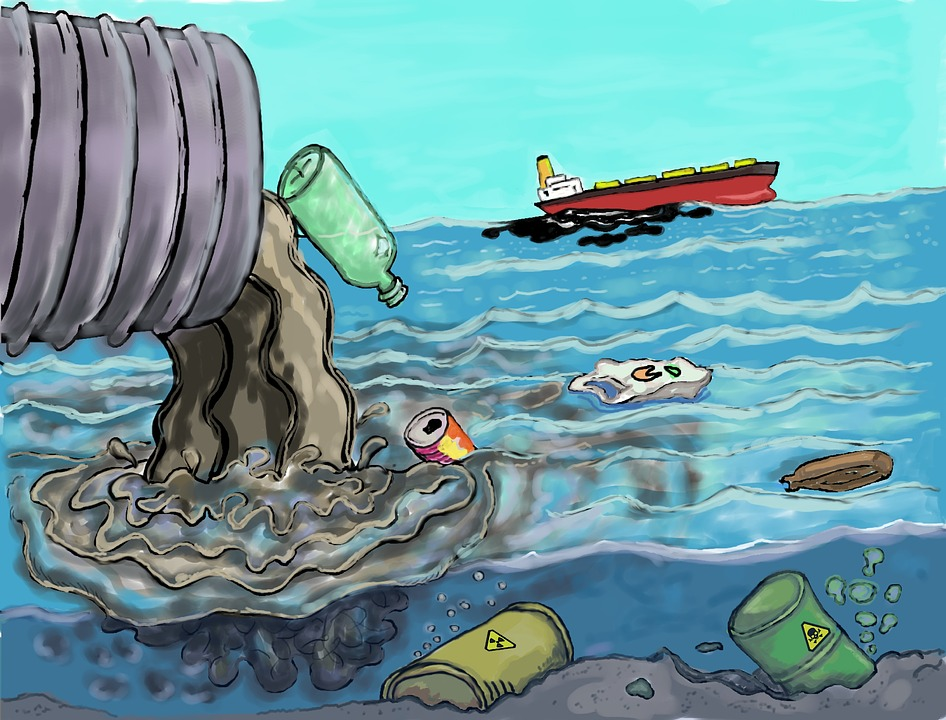

With increasing pollution rates, the ocean suffers. The ocean produces more than half the world's oxygen and covers 97% of earths water supply. Without the ocean, the other 30% of where our oxygen comes from simply won't be enough to supply for the entire world, thus without oxygen humans will die. The fact of the matter is that many of us have put this issue off for far too long. And without water it will have the same effect as if we had no oxygen.

(Click Me) For more information!